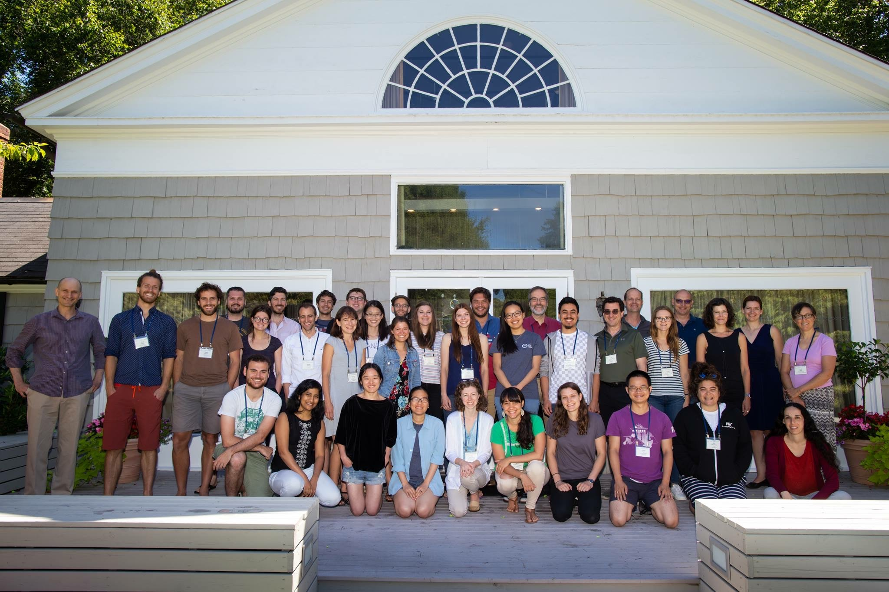
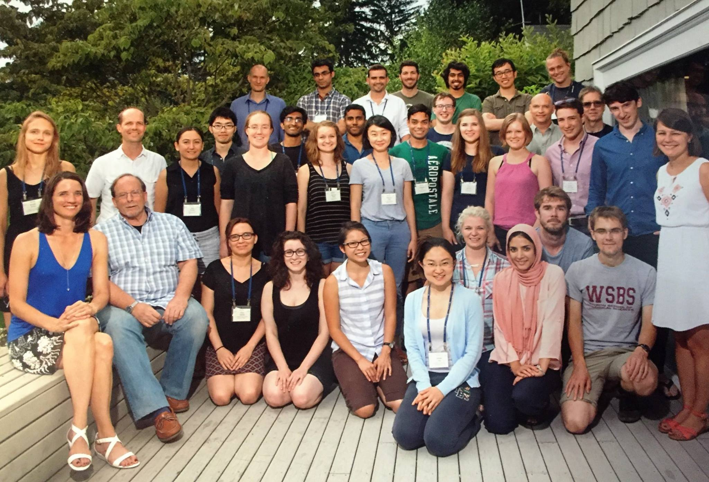

Past Courses & Alumni
2022
Cold Spring Harbor Laboratory, 2022

| Organizers | Jonathan Pillow | Emily Cooper | John Serences |
|---|---|---|---|
| Teaching Assistants | Lea Duncker | Dan Birman | |
| Lecturers | Tony Movshon EJ Chichilnisky Tatiana Engel Jennifer Groh SueYeon Chung Stefan Treue Roozbeh Kiani | Eero Simoncelli Greg Horwitz Kate Bonnen Adrienne Fairhall Anitha Pasupathy Marlene Cohen Joshua Gold | Felice Dunn Jonathan Pillow Lindsey Glickfeld Jenny Read Johannes Burge Geoff Boynton |
| Students | Sabrina Meikle Shun Kobayashi Luis Ramirez Akihito Maruya Ryan Ressmeyer Catrina Hacker Zoe Boundy-Singer Sunyoung Park Puti Wen Yizhan Miao | Irene Aji Jongmin Moon Stephanie Reeves Katharina Duecker Angus Chapman Mina Gaffney Sohrab Najafian Declan Rowley Byron Johnson Geyu Weng | Penny Chen Felicia Davatolhagh Miguel Vivar-Lazo Konstantin Lurz |
2018
Cold Spring Harbor Laboratory, 2018

| Organizers | Geoffrey Boynton | Gregory Horwitz | Jonathan Pillow | Marlene Cohen |
|---|---|---|---|---|
| Teaching Assistants | Lea Duncker | Jacob Yates | ||
| Lecturers | David Brainard Matteo Carandini EJ Chichilnisky Anne Churchland Marlene Cohen James DiCarlo Adrienne Fairhall | Julijana Gjorgjieva Alexander Huk Roozbeh Kiani Wei Ji Ma J. Anthony Movshon Stephanie Palmer Jenny Read | Fred Rieke Nicole Rust Eero Simoncelli Jon Shlens Stefan Treue | |
| Students | Michael Beyeler Daniel Birman Luke Brezovec Charles Burlingham Kelly Chang Erika Dunn-Weiss Maydel Fernandez-Alonso Ranran French Jiakun Fu Ma'ayan Gadot | Margaret Henderson Danique Jeurissen David Klindt Eline Kupers Rosa Lafer-Sousa Krithika Mohan Luis Ramos Traslosheros Lopez Zvi Roth Heiko Schütt Andrea Stacy | Kirstie Wailes-Newson Michael Waskom Matthew Whitmire Cheng Xue |
2016
Cold Spring Harbor Laboratory, 2016

| Organizers | Geoffrey Boynton | Gregory Horwitz | Jonathan Pillow |
|---|---|---|---|
| Teaching Assistants | Dina Popovkina | Jacob Yates | |
| Lecturers | David Brainard Matteo Carandini EJ Chichilnisky Anne Churchland Marlene Cohen James DiCarlo Adrienne Fairhall | Julijana Gjorgjieva Alexander Huk Roozbeh Kiani Wei Ji Ma J. Anthony Movshon Stephanie Palmer Jenny Read | Fred Rieke Nicole Rust Eero Simoncelli Jon Shlens Stefan Treue |
| Students | Kathryn Bonnen Adam Calhoun Amelia Christensen Abhishek De Lea Duncker Yunshu Fan Masoud Ghodrati James Golden Kamila Jozwik Alexander Kell | Nicholas Kleene James Moreland Gouki Okazawa Woon Ju Park Joseph Pottackal Rishi Rajalingham Kiersten Ruda Sylvia Schröder Yelda Semizer Long Sha | Oana Stanciu Vy Vo Ross Walshe |
2014
Cold Spring Harbor Laboratory, 2014

| Organizers | Geoffrey Boynton | Gregory Horwitz | Stefan Treue | Jonathan Pillow |
|---|---|---|---|---|
| Teaching Assistants | Marjena Popovic | Pascal Wallisch | ||
| Lecturers | David Brainard EJ Chichilnisky Anne Churchland Marlene Cohen Greg DeAngelis Adrienne Fairhall David Heeger | Roozbeh Kiani Zhaoping Li Wei Ji Ma J. Anthony Movshon Bruno Olshausen Stephanie Palmer Nicholas Priebe | Nicole Rust John Serences Eero Simoncelli | |
| Students | Leah Bakst Adrian Bondy Janina Huer Sirawaj Itthipuripat Kohitij Kar Leor Katz Minjung Kim Mai Morimoto Eyal NItzany Catherine Olsson | Carlos Ponce Dina Popovkina Sneha Ravi Noam Roth Stephen Sebastian Madineh Sedigh-Sarvestani Michoel Snow Alexandra Tikidji-Hamburyan Alex Trott Joris Vincent | Justin Vincent Xue-Xin Wei Xiaoyang Yao Jacob Yates |
2012
Cold Spring Harbor Laboratory, 2012

| Organizers | Geoffrey Boynton | Gregory Horwitz | Stefan Treue |
|---|---|---|---|
| Teaching Assistants | Jeremy Freeman | Lauren Jepson | |
| Lecturers | David Brainard Matteo Carandini Marisa Carrasco EJ Chichilnisky Marlene Cohen Greg DeAngelis Ione Fine | Wilson Geisler David Heeger Adam Kohn Nikolaus Kriegeskorte John Maunsell Tirin Moore J. Anthony Movshon | Nicole Rust Michael Shadlen Eero Simoncelli |
| Students | Frederico Azevedo Noah Benson Elizabeth Cutrone Davis Glasser Erin Goddard Phillip Isola Peter Kohler Miriam Meister Patrick Mineault Timothy Oleskiw | Marino Pagan Marjena Popovic Braden Purcell Ana Radonjic Philipp Schwedhelm NaYoung So Thomas Sprague Burcu Urgen Corey Ziemba Wietske Zuiderbaan |
2010
Cold Spring Harbor Laboratory, 2010
| Organizers | Geoffrey Boynton | Gregory Horwitz | Stefan Treue |
|---|---|---|---|
| Teaching Assistants | Marlene Cohen | Roozbeh Kiani | |
| Lecturers | Ted Adelson David Brainard Marisa Carrasco Frances Chance EJ Chichilnisky Yang Dan Wilson Geisler | David Heeger Judith Hirsch J. Anthony Movshon Clay Reid Nicole Rust Michael Shadlen Eero Simoncelli | Larry Snyder Fritz Sommer Doris Tsao Mike Webster |
| Students | Katharina Anton-Erxleben Nela Cicmil Thaddeus Czuba Hannah Dold Rob Dotson Zachary Ernst Jeremy Freeman Sarah Heilbronner Lauren Jepson James Marshel | Ali Moeeny Yaniv Morgensten Amy Ni Tom Putzeys Chris Said Sameer Saproo Alec Scharff Marieke Scholvinck Alexandra Smolyanskaya Cheston Tan | Nathaniel Twarog Helena Wang Stephanie Westendorff |
2008
Cold Spring Harbor Laboratory, 2008
| Organizers | Geoffrey Boynton | Gregory Horwitz | Stefan Treue |
|---|---|---|---|
| Teaching Assistants | Greg Field | Sonja Hohl | |
| Lecturers | David Brainard Matteo Carandini Marisa Carrasco EJ Chichilnisky Wilson Geisler Joshua Gold David Heeger | Bart Krekelberg Partha Mitra J. Anthony Movshon Andrew Parker Anitha Pasupathy Pamela Reinagel Eero Simoncelli | Alexander Thiele Frank Tong |
| Students | Asli Ayaz Gijs Joost Brouwer Jeremiah Cohen Mohammad Daliri Takahiro Doi Justin Elstrott Jamie Fitzgerald Ahna Girshick Till Hartmann Yan Karklin | Aaron Kerlin Armen Kherlopian Urs Köster Chi-Tat Law Michael Manookin Melchi Michel Ramat Muhammad Dona Murphey Franco Pestilli Robb Rutledge | Michael Schmid Lavanya Sharan Abtine Tavassoli Pascal Wallisch |
2006
Cold Spring Harbor Laboratory, 2006
| Organizers | Jonathan Demb | Eero Simoncelli | Stefan Treue |
|---|---|---|---|
| Teaching Assistants | Greg Field | Nicole Rust | |
| Lecturers | Larry Abbott David Brainard Matteo Carandini Marisa Carrasco EJ Chichilnisky Yang Dan Jack Gallant | Wilson Geisler David Heeger Nancy Kanwisher Michael Lewicki J. Anthony Movshon Michael Platt Pamela Reinagel | Dario Ringach Jonathan Victor |
| Students | Emily Anderson Andrea Benucci Laura Busse Andrew Clark Genevieve Heckman Sonja Hohl Ayako Ishikawa Rachael Kalmar Roozbeh Kiani Najib Majaj | Olivier Marre Nicolas Masse Eli Merriam Ian Nauhaus Minna Ng Karin Pilz Daniel Rathbun Constantin Rothkopf Alexander Sher Alan Stocker | Barry Wark Nathan Witthoft Bei Xiao Chun-I Yeh |
2004
Cold Spring Harbor Laboratory, 2004
| Organizers | Jonathan Demb | Paul Glimcher | Eero Simoncelli |
|---|---|---|---|
| Teaching Assistants | Bart Borghuis | Nicole Rust | |
| Lecturers | Ted Adelson David Brainard Matteo Carandini EJ Chichilnisky Kathleen Cullen Bruce Cumming James DiCarlo | David Heeger Dan Kersten Tony Movshon Pam Reinagel Fred Rieke Ruth Rosenholtz Mike Shadlen | Stefan Treue Preeti Verghese |
| Students | Katherine Armstrong Amit Basole Vincent Bonin Kirsten Challinor Marlene Cohen Katja Doerschner Felice Dunn Greg Field Timothy Hanks Jonas Larsson | Dorion Liston James Maciokas Kristen Macuga Brian Malone Jude Mitchell Tomoyuki Naito Hendrikje Nienborg Florian Pieper Brittanie Sather David Schoppik | Kristy Sundberg Chris Tailby Lu Yin Iris Zemach |